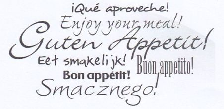
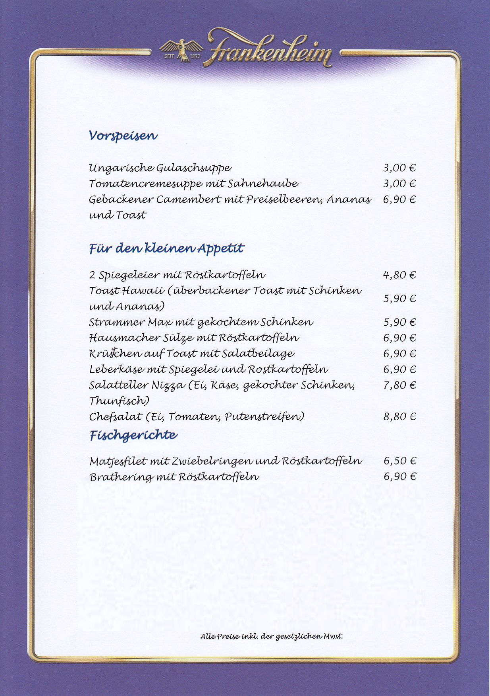
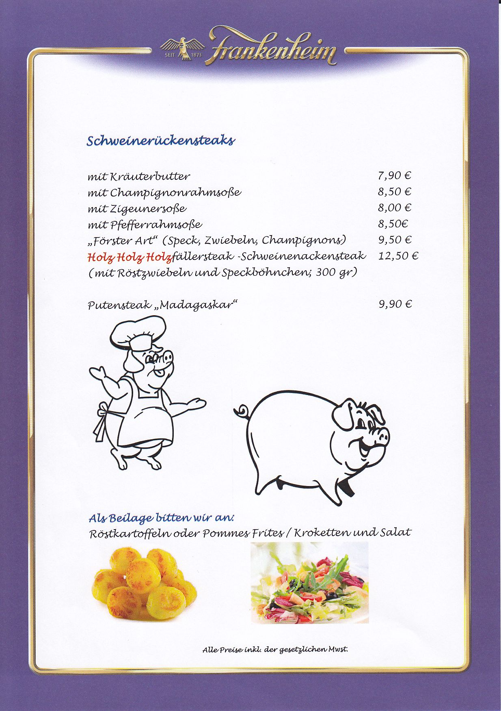
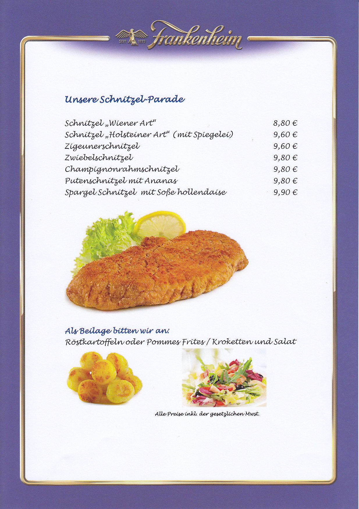
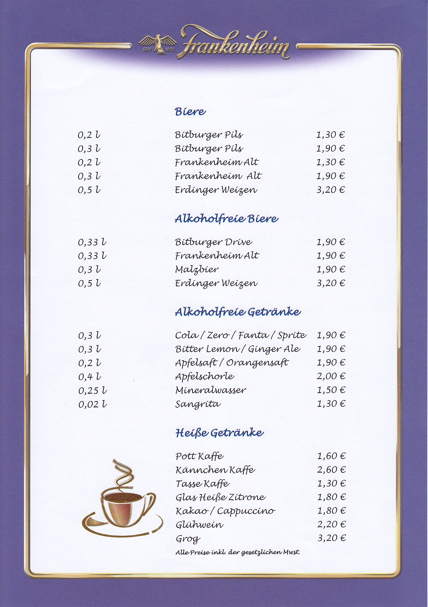
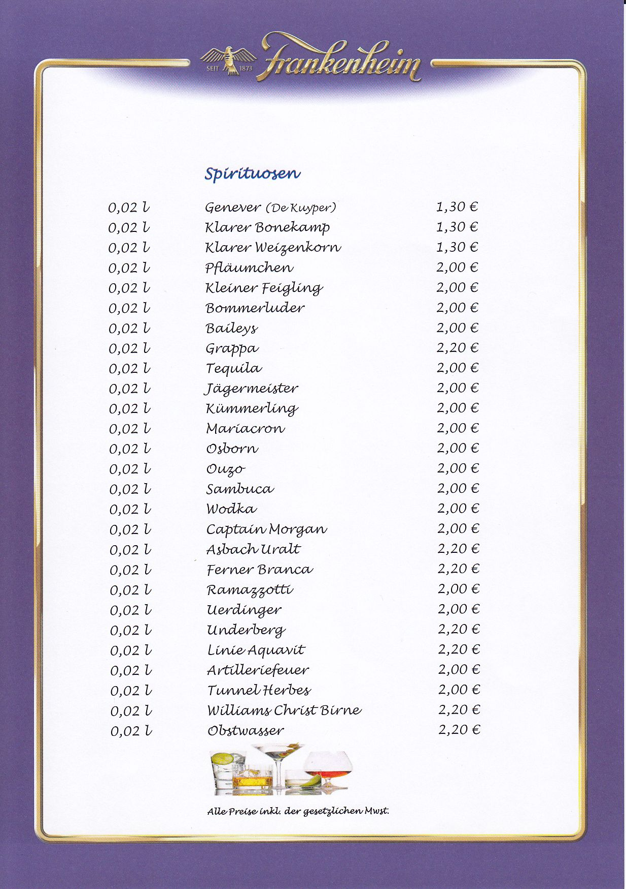
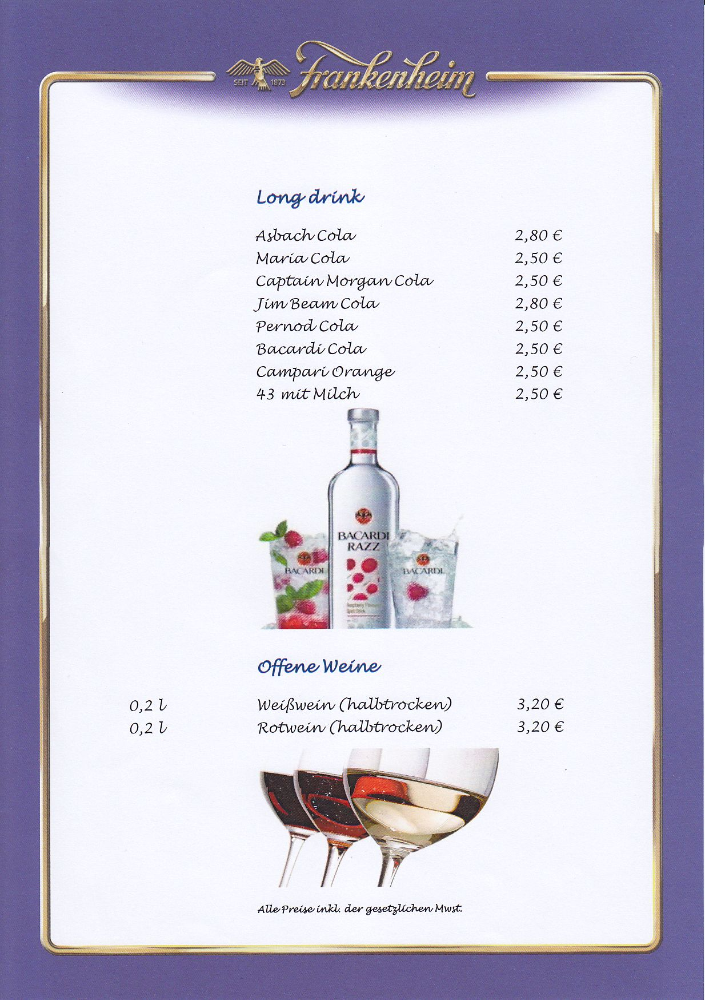

Sportkegler Gemeinschaft Mülheim a.d. Ruhr e.V.
Rot Weiß 59 Mülheim -
Blau Weiß 61 Mülheim -
KSC 71 Saarn -
SKG Jugend
Freizeit- u. Sport-Kegler gesucht !
Es sind wieder Termine fur Freizeit-Kegelclubs frei geworden.
Gekegelt werden kann auf einer der 4 Kegelbahnen im Untergeschoss,
auf gepflegten Sportkegelbahnen aus Holzpakett.
Ort: Mülheim-Styrum / Moritzstr. 45a
Bitte wendet euch zwecks Terminabsprache an unseren Gastwirt:
Almir Tabaku (sagt einfach Mirco zu ihm )
Tel.: 0208/402381 oder 0176/24609805
Er wird euch auch mit Speisen und Getränke versorgen.
siehe hierzu die -->> Speise und Getränkekarte. <--
| Sportbereich Untergeschoss |
|
|
|
|
Die Kegelhalle ist gut erreichbar mit :
Sportkegler gesucht !
Ort: Mülheim-Styrum / Moritzstr. 45a
Getränke- u. Speise-Karte Gastwirt Almir Tabaku ( oder einfach Mirco ) sagt " Herzlichst Willkommen "       
Bus (Linie 122 u. 129 bis Hauskampstr.) + Fußweg 5 Min
Straßenbahn (Linie 110 bis Friesenstr.) + Fußweg 5 Min
S-Bahn ( S1 u. S2 bis Bf Mh-Styrum) + Fußweg 8 Min)
oder mit dem Auto bis Parkplatz Sportplatz Moritzstr.+ Fußweg 2 Min
Parkplatz ist auch gegenüber genügend vorhanden
siehe Straßenkarte
Wir freuen uns auf euren Besuch und wünschen euch Gut Holz !
Die Damen > Rot-Weiß 59 Mülheim < und
die Herren > KSC 71 Saarn <
suchen Sportbegeisterte zwischen ab 10 Jahren
Vorkenntnisse im Kegelsport sind nicht erforderlch.
Kosten für passive Mitgliedschaft 10€ pro Monat
Sportbereich im Obergeschoss


Kontakt (Henry Hentschel) 0201/8695103